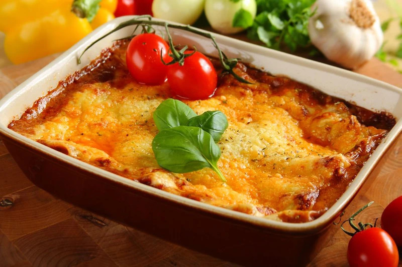

Przepis na lasagne

Składniki:
- 1 cebula
- 1 kulka mozarelli
- 400 ml mleka
- 500 g mięsa mielonego
- Szczypta soli
- 50 g mąki pszennej
- czosnek
- ser żółty
- koncentrat pomidorowy


Sposób przygotowania:
krok 1
Cebule i czosnek pokrój w drobną kostkę, wrzuć na rozgrzaną oliwę. Jak tylko się przesmażą dodaj mielone mięso i smaż powoli.
krok 2
Wlej wino i poczekaj, aż odparuje.
krok 3
Fix Knorr wymieszaj w 400 mililitrach wody i wlej do mięsa. Całość duś powoli około 20 minut, mięso powinno być miękkie, a sos gęsty.
krok 4
W tym czasie przygotuj sos beszamel. W rondelku rozpuść masło i wsyp mąkę. Mieszaj, aż mąka połączy się z tłuszczem.
krok 5
Najlepiej w kwadratowym lub prostokątnym naczyniu żaroodpornym układaj lasagne. Najpierw posmaruj dno sosem beszamel, następnie układaj surowy makaron tak, aby płaty pokryły dno i lekko zachodziły jeden za drugi.
GOTOWE !